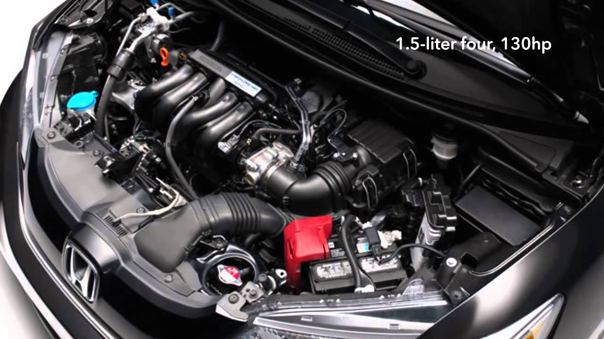

El Honda Fit Híbrido 2016 es una combinación perfecta de eficiencia, practicidad y tecnología avanzada. Este vehículo compacto ofrece un rendimiento excepcional gracias a su motor híbrido, combinado con un diseño interior espacioso y adaptable que se ajusta a diversas necesidades. Además, su diseño exterior moderno y elegante lo convierte en una excelente opción para aquellos que buscan estilo y funcionalidad en un solo paquete.
Características Destacadas del Honda Fit Híbrido 2016
Motor Híbrido de Bajo Consumo
El Honda Fit Híbrido 2016 está equipado con un motor híbrido que combina un motor de gasolina eficiente con un motor eléctrico. Este sistema híbrido permite una excelente economía de combustible y reduce las emisiones de carbono, haciendo del Fit una opción ecológica y económica para el conductor moderno.

Diseño Compacto y Funcional
El diseño compacto del Honda Fit Híbrido facilita su maniobrabilidad en entornos urbanos y espacios reducidos. A pesar de su tamaño, el Fit ofrece un espacio interior sorprendentemente amplio, con asientos flexibles y un maletero versátil que se adapta a diversas necesidades de carga.
Interior Espacioso y Adaptable
El interior del Honda Fit Híbrido está diseñado para ofrecer comodidad y flexibilidad. Con asientos traseros que se pueden plegar y un diseño ergonómico, el Fit proporciona un ambiente cómodo para los ocupantes y una capacidad de carga adecuada para sus necesidades diarias.
Seguridad del Vehículo y Pruebas Realizadas
El Honda Fit 2016 es uno de los hatchbacks subcompactos más seguros disponibles, gracias a sus excelentes resultados en pruebas de choque. Inicialmente, las calificaciones del Fit en pruebas de choque fueron inferiores a las esperadas, pero Honda implementó rápidamente mejoras durante el año modelo 2015, lo que resultó en un notable aumento en su seguridad.
La NHTSA le otorgó al Fit una calificación general de cinco estrellas, con un rendimiento de cinco estrellas en todas las pruebas, excepto en la resistencia al vuelco, donde obtuvo cuatro estrellas. Por su parte, el IIHS calificó al Fit con "Bueno" en la mayoría de las pruebas, aunque en la nueva prueba de superposición pequeña obtuvo una calificación de "Aceptable".
El Fit cuenta con airbags y control de estabilidad de serie, así como asistencia de arranque en pendientes y una cámara de visión trasera estándar. Los modelos EX y EX-L incluyen el sistema LaneWatch, que muestra una vista trasera de gran angular en la pantalla de infoentretenimiento cuando se activa la señal de giro, mejorando la seguridad en entornos urbanos.
Resumen en Video
Este video ofrece un resumen de las características destacadas del Honda Fit Híbrido 2016, cubriendo los puntos más importantes mencionados anteriormente.
Mantenimiento Básico del Honda Fit Híbrido 2016
En esta sección, abordaremos los aspectos clave del mantenimiento básico del Honda Fit Híbrido 2016, comenzando por cómo verificar los fluidos esenciales del vehículo.
Verificación de Fluidos
Es fundamental mantener los niveles de fluidos en el rango adecuado para el correcto funcionamiento del vehículo. En el siguiente video, aprenderás cómo verificar los principales fluidos del Honda Fit:
Cambio de Aceite de Motor y Filtro
El cambio de aceite es uno de los procedimientos de mantenimiento más importantes para asegurar la longevidad del motor. A continuación, se detalla cómo realizar un cambio de aceite y filtro en un Honda Fit:
Cambio de Aceite de Transmisión
El aceite de transmisión también necesita ser cambiado periódicamente para asegurar un buen desempeño del vehículo. En el siguiente video, se muestra cómo realizar este procedimiento en un Honda Fit híbrido:
Cambio de Líquido de Doble Cloche
El Honda Fit híbrido requiere un mantenimiento específico para el sistema de doble cloche. Aquí te mostramos cómo realizar el cambio de este fluido:
Además de estos procedimientos, existen otros aspectos a considerar para un mantenimiento completo del Honda Fit Híbrido 2016. Se recomienda realizar una investigación más detallada en línea si estás interesado en aprender más.
Mi Experiencia con el Mantenimiento Básico
Realizar el mantenimiento básico de mi Honda Fit Híbrido 2016 ha sido una experiencia realmente gratificante. Al principio, me parecía un desafío, pero he descubierto que es bastante accesible incluso para principiantes como yo. Es esencial tener en cuenta que realizar estos mantenimientos requiere seguir los procesos adecuados y contar con las herramientas necesarias para evitar daños. La investigación y la documentación previa son clave para cualquier tarea de mantenimiento.
Este auto ha sido un nuevo reto interesante. Me he dado a la tarea de aprender y realizar por mi cuenta los mantenimientos básicos, siempre considerando la relación entre tiempo, dinero y dificultad. Por ejemplo, he evitado hacer trabajos complicados como el mantenimiento de frenos, ya que puede ser arriesgado si no se hace correctamente. Me he centrado en los mantenimientos que son más rápidos y manejables, los cuales se pueden realizar en una tarde.
Aquí está lo que he hecho al carro por lo menos una vez:
Cambio de aceite de motor y filtro
Cambio de bujías y coils
Cambio de válvula PCV
Limpieza de válvula EGR
Cambio de aceite de transmisión y limpieza del filtro
Vaciado del radiador y reemplazo de coolant
Cambio de líquido del cloche electrónico
Cambio de filtro de aire
Cambio de batería
Reemplazo de luces LED de doble toque
Instalación de bocinas (originales en las puertas traseras)
Gracias por visitar esta página y leer sobre mi experiencia con el mantenimiento básico del Honda Fit. Para finalizar, les comparto un video de Guaroa Ubiñas del programa dominicano Carros y Más, que fue muy útil para mí durante el proceso de compra del vehículo: